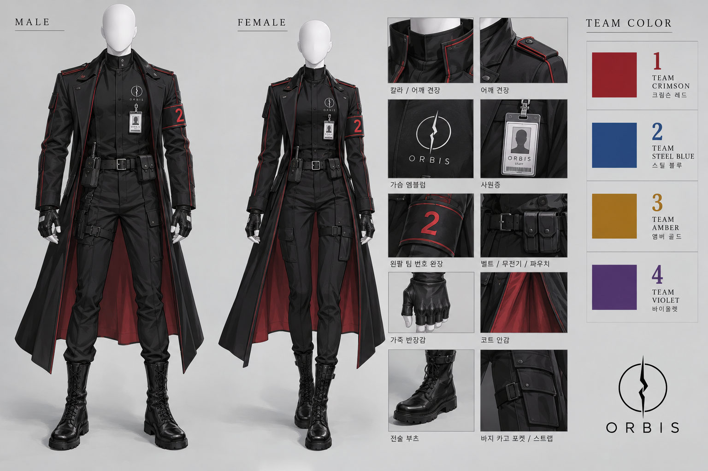

01
제1팀 · CRIMSON RED
크림슨 레드. 어깨 및 소매 라인, 완장 번호에 적색 적용.
ORBIS 대한민국지부 특수요원 표준 제복. 전 팀 공통으로 흑색 전술 제복을 착용하며, 소속 팀은 견장, 소매 라인 및 왼팔 완장의 색상으로 구분합니다.
남녀 동일한 기본 디자인을 적용하며, 체형에 따라 재킷과 코트의 실루엣을 조정합니다.

ORBIS UNIFORM REFERENCE · SPECIAL AGENT STANDARD
| 상의 | 검정 하이넥 재킷, 스탠딩 칼라, 히든 단추 여밈 및 짧은 견장. 어깨와 소매 옆선에 팀별 식별색 적용. |
|---|---|
| 내의 | 검정 슬림 하이넥 베이스 레이어. |
| 하의 | 검정 슬림 전술 바지. 카고 포켓 및 장비 고정 스트랩 부착. |
| 외투 | 무릎 아래에서 발목 사이 길이의 검정 롱코트. 안감은 크림슨 레드. |
| 장갑 | 검정 가죽 반장갑. |
| 신발 | 검정 전술 부츠. 바짓단은 부츠 안으로 정리. |
| 장비 | 검정 가죽 벨트, 무전기 및 소형 파우치. 임무에 따라 추가 장비 지급. |
| 휘장 | 가슴에 균열 원형 ORBIS 엠블럼 부착. 사원증은 가슴 전면에 고정. |
| 완장 | 왼팔에 소속 팀 번호가 표시된 검정 완장 착용. 번호와 테두리는 팀별 식별색 적용. |
제복의 기본 색상은 검정으로 통일하며, 팀별 지정 색상은 견장·소매 라인·완장에 적용합니다.
크림슨 레드. 어깨 및 소매 라인, 완장 번호에 적색 적용.
스틸 블루. 어깨 및 소매 라인, 완장 번호에 청색 적용.
앰버 골드. 어깨 및 소매 라인, 완장 번호에 금색 적용.
바이올렛. 어깨 및 소매 라인, 완장 번호에 보라색 적용.
| 가슴 휘장 | 왼쪽 가슴에 ORBIS 균열 원형 엠블럼 부착. |
|---|---|
| 사원증 | 가슴 전면에 고정하여 외부 식별 가능하도록 유지. |
| 견장 | 양쪽 어깨에 짧은 견장 및 팀별 식별 라인 적용. |
| 완장 | 왼팔 상단에 팀 번호 완장 부착. |
| 허리 장비 | 무전기와 파우치는 장비 벨트에 고정. |
| 코트 안감 | 전 팀 공통 크림슨 레드 적용. |
※ 본 제복 기준은 ORBIS 대한민국지부 창작 세계관의 특수요원 복장 설정을 따릅니다.